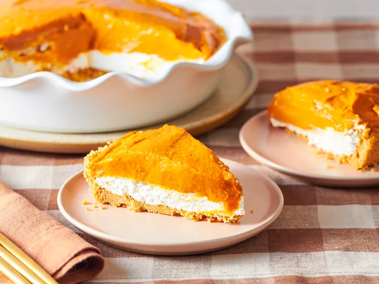

Double Layer Pumpkin Pie

Description
This double layer pumpkin pie combines cheesecake and pumpkin pie on top of a ready-made graham cracker crust to create one delicious desset with two luscious layers- light and fluffy cream cheese and perfectly spiced, creamy pumpkin that's thickened with a pudding mix. Add this easy, no-bake pie to your holiday menu, or serve anytime you're craving a descent treat.
Pumpkin Layer Ingredients
- 1 cup cold milf
- 1(15 ounce) can soled pack pumpkin puree
- 2(3.5 ounce) packages instant vanilla pudding mix
- 1 teaspoon ground cinnamon
- 1/2teaspoon ground ginger
- 1/4 teaspoons ground cloves
Cheescake Layer Ingredients
- 4 ounces cream cheese, softened
- 1 tablespoon milk
- 1 tablespoon white sugar
- 11/2 cups frozen whipped topping, thawed
- 1(9-inch) prepared graham cracker crust
Steps
- Gather all ingredients`
- Pour milf for pumpkin layer into large bowl. Add pumpkin pureem pudding mix, cinnamon, ginger, and cloves and whisk until thoroughly mixed. Let sit until thickened, about 5 minutes.
- Meanwhile, beat cream cheese, milk and sugar for cheesechake layer ina a large bowl with an electric mixer until smooth. Gently stir in whipped topping.
- Spoon into graham cracker crust and spread into an even layer.
- Spread thickened pumpkin mixture over top.Cover and refrigerate until set, at least 4 hours.
- Server and enjoy